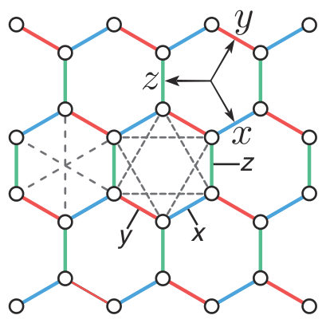
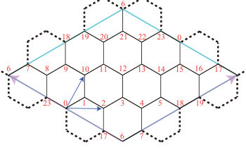

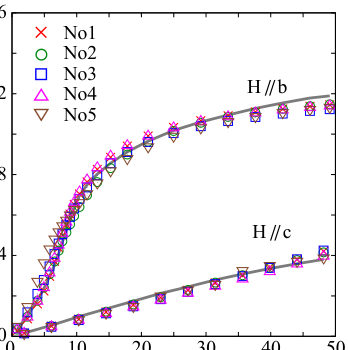
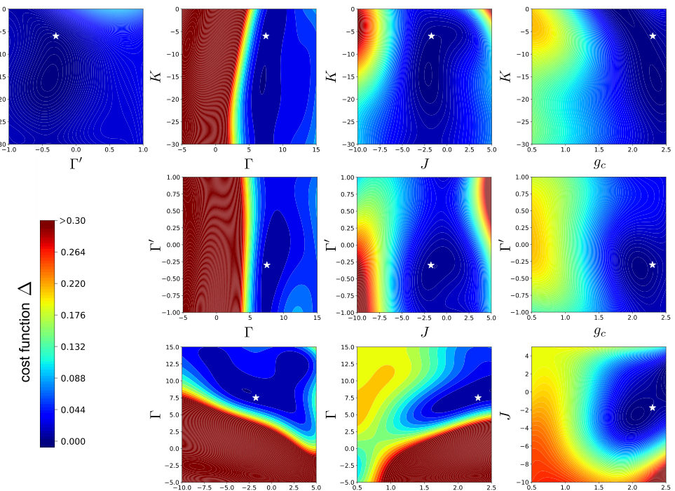
← Index · ← Previous · Next →
Authors: Gustavo Schranck Habermann, Daniel A. Turolla Vanzella
Type: theory · Category: other · PDF: https://arxiv.org/pdf/2605.24103v1
Analysis basis: full PDF text, analyzed in chunks
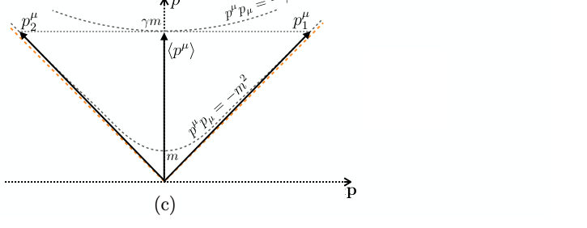
Summary. This paper proposes a method to test the limits of the semiclassical Einstein equation by using a superposition of boosted masses. It shows that the nonlinear nature of gravity can cause the semiclassical average to predict a strong-gravity regime that is absent in the individual quantum branches. This provides a way to potentially distinguish between quantum and semiclassical gravity using branch-degenerate observables.
Why it may be interesting. not directly relevant
Main problem. Investigating the validity and limits of the semiclassical Einstein equation, specifically whether the approximation holds when quantum fluctuations of the stress-energy tensor are large or when nonlinear gravity is involved.
Main result. The authors demonstrate that the semiclassical approximation can predict a strong-gravity, nonlinear regime even when individual branches of a quantum superposition are in a weak-field regime, due to the amplification of energy-momentum in the averaged stress-energy tensor.
Method. The study uses an analytical approach with the exact Levi-Civita metric in Weyl canonical form, applying Lorentz boosts to compare the predictions of a quantum superposition of states versus a semiclassical average.
Model / system. A toy model consisting of a cylinder with low proper linear density in a coherent superposition of two opposite relativistic boost velocities.
Key observables. The rate of change of the proper circumference with respect to the proper radius (dC/dr).
Important parameters / regimes. Dimensionless mass parameter (sigma), Lorentz factor (gamma), and the Tolman gravitational mass per unit length (Sigma).
Assumptions / limitations. The use of a 'flat-interior' approximation for the quantum scenario, which may break down in the semiclassical regime as the gravitational field becomes non-perturbative.
Figures summary. Figure 1 illustrates the difference in gravitational content between the two scenarios.
Paper structure. The paper introduces the problem of semiclassical gravity validity, defines a toy model of a boosted cylinder, performs analytical calculations for both quantum and semiclassical scenarios, and compares observable predictions to demonstrate the breakdown of the approximation.
In the context of semiclassical gravity, the semiclassical Einstein equation is often invoked when backreaction of quantum matter/fields on the spacetime is at stake. It is expected to hold when quantum fluctuations are small. Yet, it is routinely used to justify the central role of the expectation value of the stress-energy tensor of quantum fields, whose fluctuations formally diverge. Here we propose a new way to probe the limits of this approximation by exploiting peculiar nonlinearities of gravity. As a proof of principle, we construct a controlled, analytically tractable setting where the incoherent mixture of weak-gravity states drives the system into a strong-gravity regime. By selecting a branch-degenerate observable, one can compare predictions of quantum and semiclassical gravity, potentially delimiting the validity of the latter.
Authors: Walid El Maouaki, Muhammad Shafique
Type: theory · Category: quantum information and computing · PDF: https://arxiv.org/pdf/2605.25783v1
Analysis basis: full PDF text, analyzed in chunks
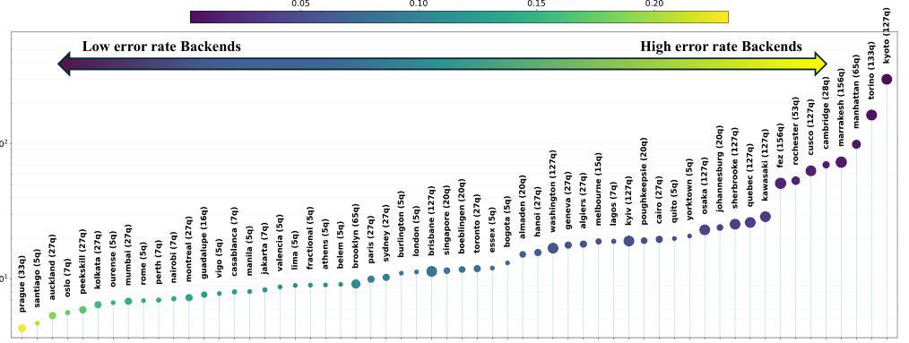
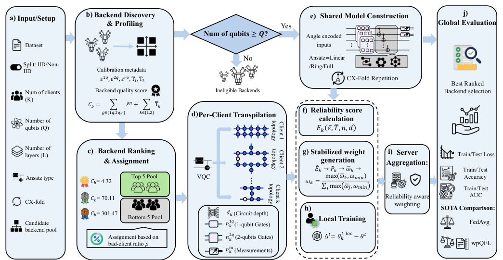
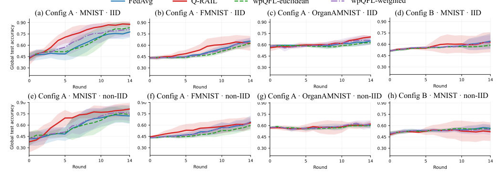
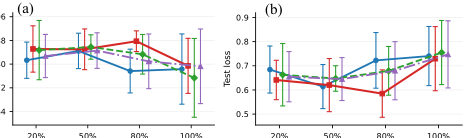
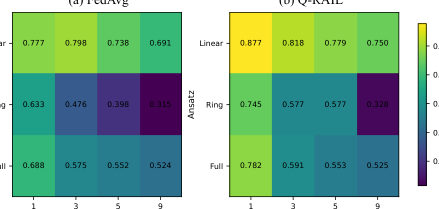
Summary. This paper introduces Q-RAIL, a framework designed to make Quantum Federated Learning more robust to the noise and hardware differences found in NISQ devices. By weighting client updates based on the reliability of their specific hardware and circuit depth, it prevents noisy backends from degrading the global model. This approach significantly improves learning accuracy and stability in heterogeneous quantum networks.
Why it may be interesting. not directly relevant
Main problem. Addressing hardware heterogeneity in Quantum Federated Learning (QFL), where varying noise levels and transpilation-induced circuit changes across different NISQ backends cause unreliable client updates.
Main result. The Q-RAIL framework significantly improves QFL accuracy (e.g., a 10.0-point gain on MNIST) and robustness against 'bad clients' by using a reliability-aware aggregation method.
Method. Q-RAIL computes a client-specific effective noise budget using backend calibration metadata and transpiled circuit statistics, then applies a stabilized, temperature-scaled softmax weighting for aggregation.
Model / system. The study uses Variational Quantum Classifiers (VQCs) with angle-encoding feature maps and various ansatz topologies (linear, ring, full) implemented on simulated heterogeneous NISQ hardware (Qiskit FakeProvider).
Key observables. Test accuracy, test loss, Area Under the Curve (AUC), and effective noise budget.
Important parameters / regimes. Temperature scaling (tau), uniform mixing (beta), minimum weight floor (w_min), qubit counts (4, 10, 15), and CX-fold noise amplification.
Assumptions / limitations. Assumes the server has access to backend calibration metadata and transpilation statistics; focuses on the NISQ era where noise-induced device shift is a primary driver of degradation.
Figures summary. Figure 1 shows the Q-RAIL workflow; Figure 2 ranks backends by error; Figure 3 details the methodology flowchart; Figures 4-6 show learning curves, robustness to bad clients, and scalability with client count; Figures 7-8 show heatmaps of noise budgets and accuracy relative to circuit complexity.
Paper structure. The paper introduces the problem of hardware heterogeneity in QFL, proposes the Q-RAIL framework, details the reliability-scoring and aggregation mechanism, presents benchmarking results across various datasets and noise regimes, and discusses limitations and future directions.
Quantum federated learning (QFL) on NISQ hardware is highly sensitive to backend heterogeneity: some clients contribute informative updates, while others contribute noise-dominated drift that uniform averaging cannot distinguish. We propose Q-RAIL (Quantum Reliability-Aware Federated Inference and Learning), a circuit- and calibration-aware aggregation method for hardware-heterogeneous QFL. Q-RAIL computes a client-specific effective noise budget from backend calibration metadata together with transpiled circuit statistics. This budget is converted into stabilized aggregation weights using temperature scaling, uniform mixing, and a minimum-weight floor. Q-RAIL was evaluated across multiple experimental settings, including an ablation study, and benchmarked against state-of-the-art methods on three datasets: MNIST, Fashion-MNIST, and OrganAMNIST. On the primary MNIST benchmark under strong hardware skew, Q-RAIL improves final test accuracy from FedAvg's 0.777 to 0.877, a +10.0-point gain corresponding to about 44.8% relative error reduction, while also exceeding the strongest wpQFL baseline (0.833). At the same time, test loss drops from 0.722 to 0.585, and test AUC rises from 0.920 to 0.973. Under non-IID MNIST, Q-RAIL reaches 0.813 vs 0.722 for FedAvg. It also outperforms FedAvg in 12/12 ansatz/CX-fold stress configurations and remains stronger at 4, 10, and 15 qubit setups. Overall, the results support calibration-driven, circuit-aware aggregation as a practical path toward robust QFL on heterogeneous quantum hardware.
Authors: Walid El Maouaki, Alberto Marchisio, Muhammad Shafique
Type: both · Category: quantum information and computing · PDF: https://arxiv.org/pdf/2605.25756v1
Analysis basis: full PDF text, analyzed in chunks
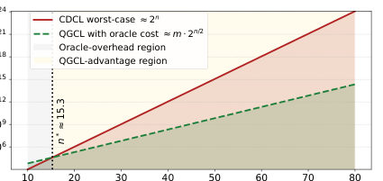
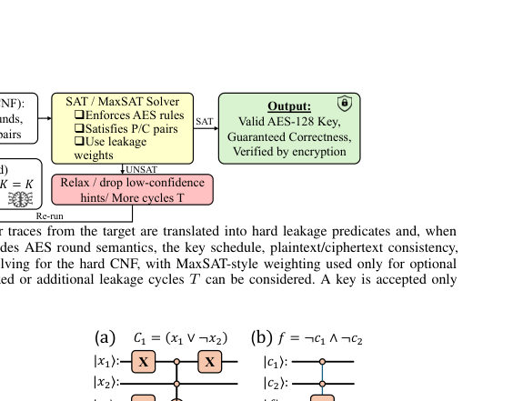
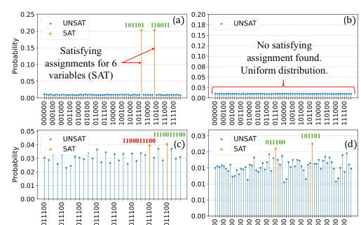
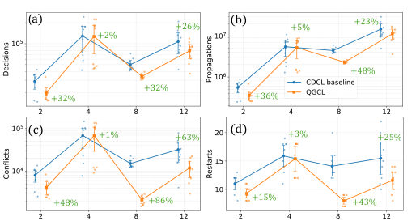
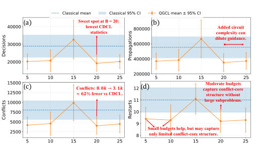
Summary. This paper proposes a hybrid algorithm called QGCL that integrates Grover search into classical SAT solvers to accelerate AES cryptanalysis. By using quantum search to provide local heuristic hints rather than attempting a global search, it significantly reduces the computational effort required to solve massive, structured search problems.
Why it may be interesting. not directly relevant
Main problem. The difficulty of recovering AES-128 secret keys from noisy power side-channel leakage, which is a massive and highly structured combinatorial search problem impractical for full-scale Grover search.
Main result. The QGCL framework achieves up to an 86% reduction in solver conflicts and improves wall-time in ideal simulations by using Grover search to provide heuristic guidance to a classical CDCL solver.
Method. A hybrid quantum-classical approach (QGCL) where Grover search is invoked on small, dynamically extracted subformulas (conflict cores) to provide branching hints (variable activities and polarities) to a classical CDCL solver.
Model / system. The problem is modeled as a Boolean Satisfiability (SAT) problem in Conjunctive Normal Form (CNF) derived from AES-128 power side-channel leakage, simulated using the PennyLane framework on an NVIDIA GPU.
Key observables. Solver-internal statistics including conflicts, decisions, propagations, restarts, and total wall-time.
Important parameters / regimes. Grover budget (subproblem size), maximum number of Grover calls (C_max), mixing parameter (eta_t), and the depth of the cryptanalytic problem (T).
Assumptions / limitations. The effectiveness relies on a useful operating regime where quantum subproblems are small enough for near-term hardware; the framework assumes the quantum output only influences heuristics and cannot alter the logical SAT/UNSAT result.
Figures summary. Figure 1 shows asymptotic complexity scaling; Figure 2 shows the AES side-channel workflow; Figure 3 illustrates the QGCL control flow; Figure 5 shows subformula extraction; Figure 6 compares ideal vs. noisy Grover outputs; Figure 7 compares CDCL vs. QGCL performance metrics.
Paper structure. The paper introduces the cryptanalytic challenge, defines the QGCL hybrid framework and circuit construction, details the subformula extraction and heuristic update methods, presents experimental results on various scales and noise levels, and concludes with future work.
Power side-channel attacks on AES exploit data-dependent physical leakage to recover secret keys, but turning noisy leakage observations into a verified AES-128 key remains a hard combinational search problem. SAT-assisted power side-channel cryptanalysis addresses this challenge by encoding AES semantics, key constraints, plaintext/ciphertext consistency, and leakage predicates as CNF, so that candidate keys must satisfy the exact cryptographic specification. These cryptanalytic SAT formulas are large and highly structured; our largest controlled AES-oriented power-SCA instances contain up to 39,389 variables and 137,712 clauses, making a full-formula Grover search well beyond the scale studied here and beyond currently practical near-term implementations. We propose QGCL, a Quantum-Guided Conflict-Driven Clause Learning (CDCL) framework in which Grover search is invoked only on small subformulas extracted dynamically around CDCL conflict cores. The quantum subsolver returns candidate assignments and violation scores that bias branching heuristics, while final SAT/UNSAT decisions and key verification remain classical. We evaluate QGCL on AES-oriented cryptanalytic SAT instances derived from power side-channel CNFs with leakage-derived hint configurations, measuring conflicts, restarts, decisions, and propagations. The experiments show consistent reductions in these solver-internal statistics on harder instances, with up to an 86% reduction in conflicts compared with the classical conflict-learning baseline. Parameter sweeps over the number of Grover oracle calls and the subproblem size identify a regime in which a modest quantum resource allocation captures most of the observed improvement.
Authors: Elise Fressart, Michel Nowak, Nicole Spillane
Type: theory · Category: quantum information and computing · PDF: https://arxiv.org/pdf/2605.26090v1
Analysis basis: full PDF text, analyzed in chunks
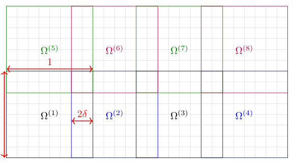
Summary. This paper introduces a quantum-compatible domain decomposition framework to precondition large-scale linear systems. By reducing the condition number of FEM-discretized PDEs, it enables more efficient execution of quantum linear solvers, potentially overcoming the scaling limits of current quantum algorithms.
Why it may be interesting. not directly relevant
Main problem. Addressing the scalability bottleneck in Quantum Linear System Solvers (QLSS) by reducing the condition number of large-scale matrices arising from the Finite Element Method (FEM).
Main result. The authors prove the feasibility of quantum domain decomposition and provide upper bounds for the block-encoding parameters and computational complexity of the preconditioned system.
Method. The study utilizes a two-level Additive Schwarz preconditioner with BPX local solvers, implemented via block-encoding and Quantum Singular Value Transformation (QSVT) for the Poisson equation.
Model / system. The mathematical model is the Poisson equation (a diffusion-type PDE) on a d-dimensional hyperrectangle, discretized using the Finite Element Method (FEM) on a Cartesian mesh.
Key observables. The condition number of the preconditioned operator, the subnormalization factor (alpha), and the complexity of computing inner products (quantities of interest).
Important parameters / regimes. Mesh size (h or L), overlap parameter (delta), number of subdomains (N), and the diffusion tensor (rho).
Assumptions / limitations. The domain is assumed to be a hyperrectangle, the diffusion coefficient is constant over each mesh element, and the local solvers are implemented via block-encoding.
Figures summary. Figure 1 illustrates the spatial arrangement of overlapping subdomains in a 2D setup; numerical tables compare condition numbers and eigenvalue ratios across different preconditioners and subdomain counts.
Paper structure. The paper progresses from the FEM discretization setting to domain decomposition and spectral bounds, followed by block-encoding construction, cost analysis, and a numerical proof-of-concept.
Even in cases where quantum linear solvers provide significant speedup compared to their classical counterparts, their performance depends on some of the same parameters. In particular, the condition number of the matrix which is to be inverted is a decisive parameter. A well known classical, and now quantum, remedy is to precondition the linear system $A x = b$ by premultiplying it by a matrix $H$ in such a way that the condition number of $HA$ is significantly smaller than the condition number of $A$. In this work, we focus on a family of preconditioners called domain decomposition. First, we prove that it is feasible to apply quantum domain decomposition. We provide upper bounds for the block-encoding parameters of the Poisson problem discretized by the finite element method and preconditioned by the two-level Additive Schwarz preconditioner (one of the most fundamental domain decomposition techniques). From these bounds, we deduce the complexity of the quantum linear system solver. Second, we focus on a particular choice of local solver within the domain decomposition preconditioner by applying recent work by [Deiml and Peterseim, \textit{Math. Comput.}, 2025] on the Bramble--Pasciak--Xu (BPX) preconditioner. Finally, we provide details on how the operators are implemented.
Authors: Wenwei Zhang, Jintao Wang, Tianyu Ye, Changgeng Liao
Type: both · Category: quantum information and computing · PDF: https://arxiv.org/pdf/2605.25365v1
Analysis basis: full PDF text, analyzed in chunks
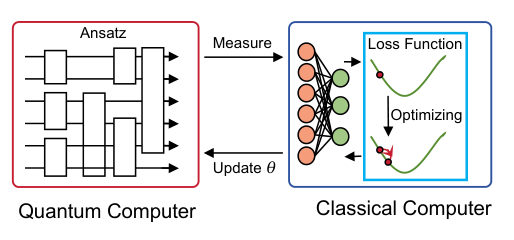
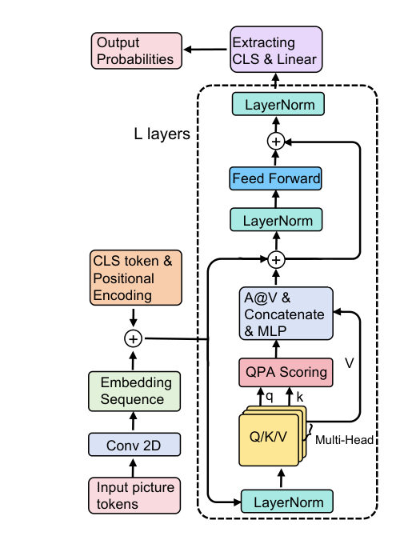
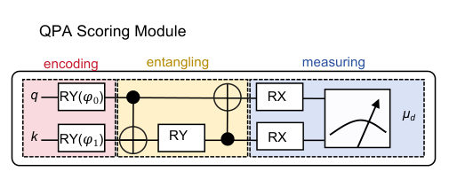
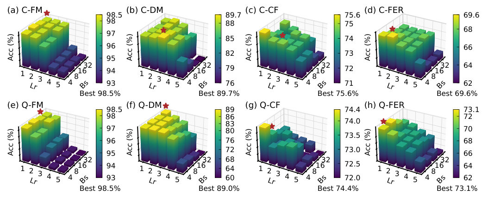
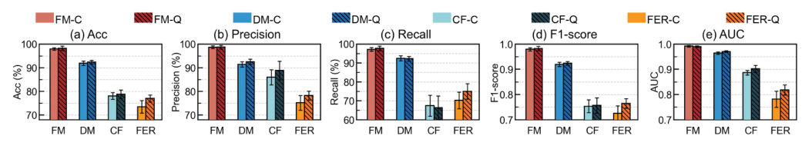
Summary. This paper introduces a hybrid quantum-classical neural network that replaces the classical dot-product attention mechanism with a parameterized quantum circuit. By leveraging quantum features like entanglement and non-monotonicity, the model achieves higher accuracy in image classification tasks compared to standard Vision Transformers.
Why it may be interesting. not directly relevant
Main problem. The paper addresses the limitations of classical self-attention, such as linear operations and unbounded output ranges, by exploring whether a quantum-enhanced scoring function can provide superior structural inductive biases like non-separability and non-monotonicity.
Main result. The proposed QPSAN architecture significantly outperforms the Vision Transformer (ViT) baseline on several image classification datasets, with the quantum advantage increasing alongside data complexity.
Method. The authors use a hybrid quantum-classical Variational Quantum Algorithm (VQA) framework, implementing a two-qubit Parameterized Quantum Circuit (PQC) as the attention scoring module and optimizing it via classical backpropagation.
Model / system. A hybrid architecture consisting of a classical Vision Transformer (ViT) backbone integrated with a Quantum Parameterized Self-Attention (QPA) module, which utilizes a two-qubit circuit with an encode-entangle-measure design.
Key observables. The attention score $\mu_d(q, k)$, calculated as the joint measurement probability $P(|00\rangle) + P(|11\rangle)$ in the computational basis.
Important parameters / regimes. Five trainable quantum parameters: $\theta_s$ (initial encoding), $\gamma_d$ (difference encoding), $\gamma_s$ (sum encoding), $\alpha$ (entanglement), and $\beta$ (mixer).
Assumptions / limitations. The proofs for non-monotonicity and asymmetry assume non-zero values for encoding and entanglement parameters; the study also assumes the ability to classically simulate the circuit for validation.
Figures summary. Figure 1 shows the hybrid VQA architecture; Figure 2 illustrates the QPSAN architecture replacing classical dot-product; Figure 3 shows the circuit structure; Figure 8 shows the impact of various quantum noise channels on accuracy.
Paper structure. The paper introduces the problem of classical attention limitations, proposes the QPSAN architecture, provides a mathematical framework proving the scoring function's properties (non-separability, asymmetry, non-monotonicity), presents experimental results on vision datasets, and conducts ablation and noise robustness studies.
Transformer now underpins modern AI as its core infrastructure. Its defining capability-dynamically focusing on the most relevant information in complex inputs-is bounded above by the self-attention scoring function. Quantum computing, with its superposition, entanglement, and probabilistic outputs, offers a fundamentally distinct computational framework for exploring beyond the design constraints of classical scoring functions. While quantum attention mechanisms have shown initial promise, existing works remain largely confined to redefining feature similarity measures, leaving the systematic use of parameterized quantum circuits (PQCs) as scoring functions largely unexplored; a substantial portion of existing schemes further rely on purely quantum architectures, precluding effective encoding of high-dimensional image inputs in the Noisy Intermediate-Scale Quantum era. We propose the Quantum Parameterized Self-Attention Network (QPSAN), implementing the self-attention scoring function via PQCs with only 5 trainable quantum parameters per layer. QPSAN computes query-key attention scores through quantum state encoding and joint measurement, yielding naturally bounded outputs without the explicit scaling of classical dot-product attention. We further establish a theoretical framework of the mathematical properties of this scoring function, demonstrating its potential to capture complex nonlinear query-key interactions, and quantifying the structural constraints of the encoding layer via effective degrees of freedom analysis. Experiments on four vision datasets show that QPSAN significantly outperforms the Vision Transformer (ViT) baseline, with the quantum representational advantage amplifying as data complexity increases. Ablation studies indicate that the performance gains may stem from the structural inductive bias of the quantum circuit rather than from parameter scale.
Authors: Kripa Sankaranarayanan, Marek Perkowski
Type: theory · Category: quantum information and computing · PDF: https://arxiv.org/pdf/2605.24182v1
Analysis basis: full PDF text, analyzed in chunks
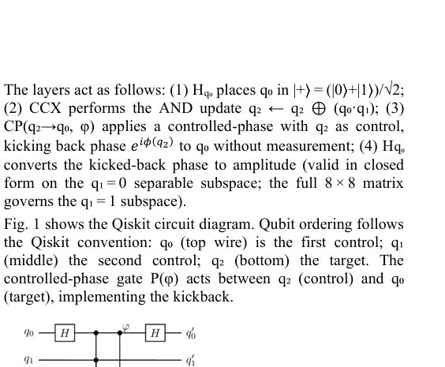
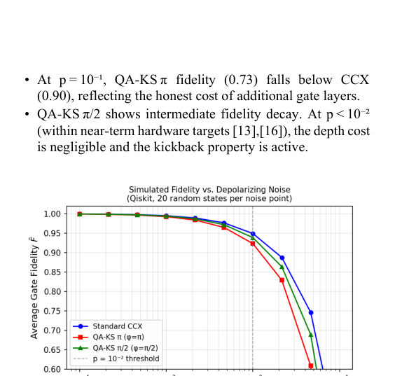
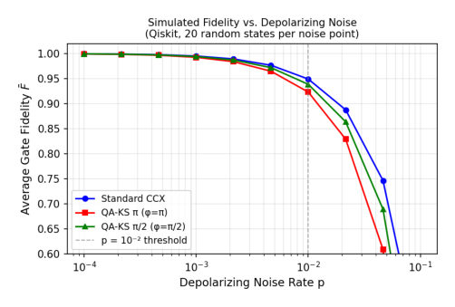
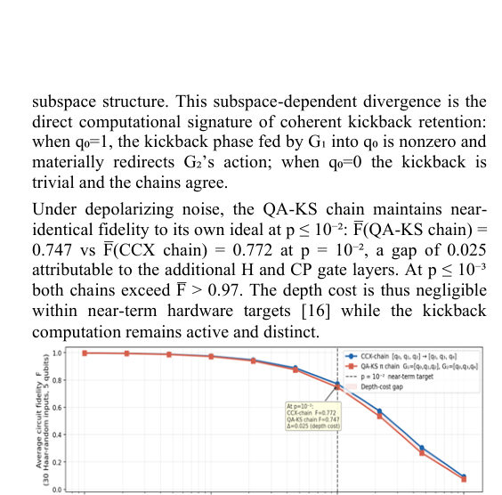
Summary. The paper proposes a new class of three-qubit gates that act like a Toffoli gate but include extra features like measurement-free phase kickback and built-in error resistance. This could allow for more efficient quantum computing by reducing the need for complex error correction and ancilla qubits.
Why it may be interesting. not directly relevant
Main problem. The high resource cost of Toffoli (CCX) gates in fault-tolerant architectures and the lack of intrinsic, gate-level error suppression mechanisms that do not require measurement or ancilla overhead.
Main result. The introduction of the QA-KS(phi) gate family, which embeds the Toffoli gate while providing measurement-free phase kickback and intrinsic error non-amplification on specific subspaces.
Method. The authors use a mathematical framework of Hadamard conjugation and controlled-phase gates, verified via unitarity checks and Qiskit depolarizing-noise simulations.
Model / system. A parameterized three-qubit gate family (QA-KS) consisting of a Hadamard sandwich around a CCX gate and a controlled-phase gate, designed for linear connectivity in trapped-ion or surface-code architectures.
Key observables. Average gate fidelity, phase kickback amplitude, trace-distance weight of error propagation, and computational divergence (orthogonality) from standard CCX gates.
Important parameters / regimes. The compile-time parameter phi (controlling kickback amplitude), noise rate p (tested up to 10^-1), and the error types (X, Y, Z).
Assumptions / limitations. The gate does not self-modify at runtime (parameters are set at compile-time); the analysis assumes a standard depolarizing noise model.
Figures summary. Fig. 1 shows the Qiskit circuit diagram of the gate sequence involving H, CCX, and P gates.
Paper structure. The paper introduces the gate family, defines its mathematical structure and unitary matrix, demonstrates its unique computational signatures via kickback chains, evaluates its error-suppression properties, and performs noise simulations.
We introduce Quantum-Adaptive KS($\varphi$) ($K$ = kickback, $S$ = sandwich), a parameterized three-qubit gate family that structurally embeds the Toffoli (CCX) gate within two additional components: (1)a palindromic Hadamard sandwich on the first control qubit $q_0$ that conjugates $Z$-type errors to $X$-type in the CCX frame, providing simultaneous sensitivity to both error types without ancilla overhead; and (2)a controlled-phase (CP) gate whose quantum phase kickback propagates post-CCX target-state information into the control-qubit phase without measurement. The term Quantum- Adaptive refers to amplitude steering conditioned by the compile-time parameter $\varphi$ via a Quantum Neural Cellular Automaton (QNCA) majority-inspired bias rule; the gate does not self-modify at runtime. Two QA-KS($π$) gates chained on a shared control qubit $q_0$ produce outputs completely orthogonal to two sequential CCX gates on $q_0$=1 inputs (output fidelity F=0.000), while agreeing exactly on $q_0$=0 inputs (F=1.000). This subspace-dependent divergence is the direct computational signature of coherent phase retention across gate boundaries -- impossible for CCX-only circuits. On the $q_1$ = 0 subspace the gate acts deterministically (up to a relative phase), providing intrinsic error non-amplification. On the $q_1$ = 1 subspace it produces four-component entangled superpositions, making it a strictly distinct quantum-native primitive from CCX. We present the complete $8 \times 8$ unitary matrix, confirmed exact to $||U^{\dagger}U-I||_{\infty} < 10^{-15}$, and define two canonical variants: QA-KS$_{π/2}$ ($\varphi = π/2$, $S$ gate) and QA-KS$_π$ ($\varphi = π$, $Z$ gate). Qiskit depolarizing-noise simulation demonstrates near-unit fidelity at $p \leq 10^{-2}$ with an honest depth cost at higher error rates. The gate preserves the three-qubit footprint of CCX with no qubit overhead.
Authors: Muhammad Kashif, Muhammad Shafique
Type: theory · Category: quantum information and computing · PDF: https://arxiv.org/pdf/2605.25768v1
Analysis basis: full PDF text, analyzed in chunks
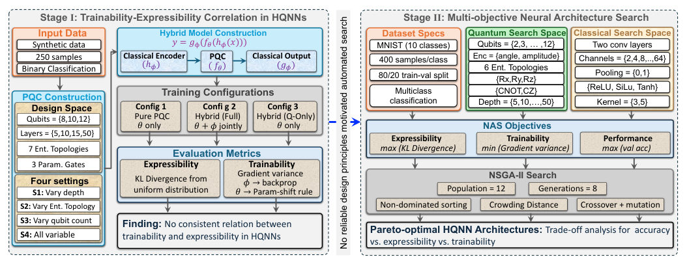
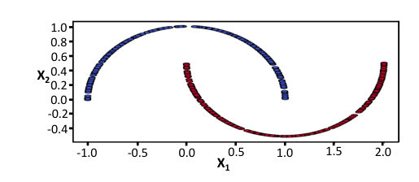
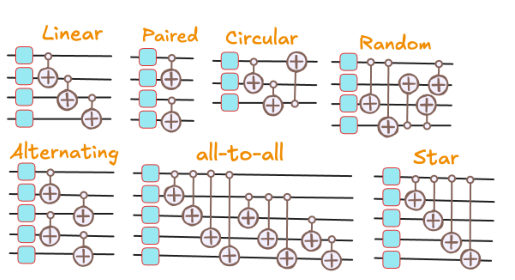
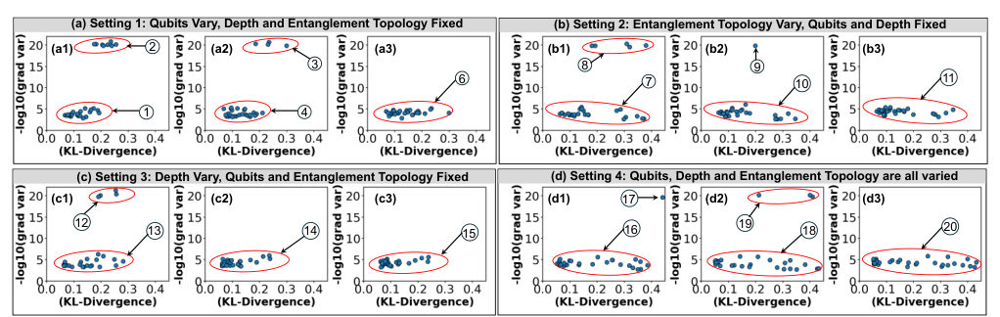
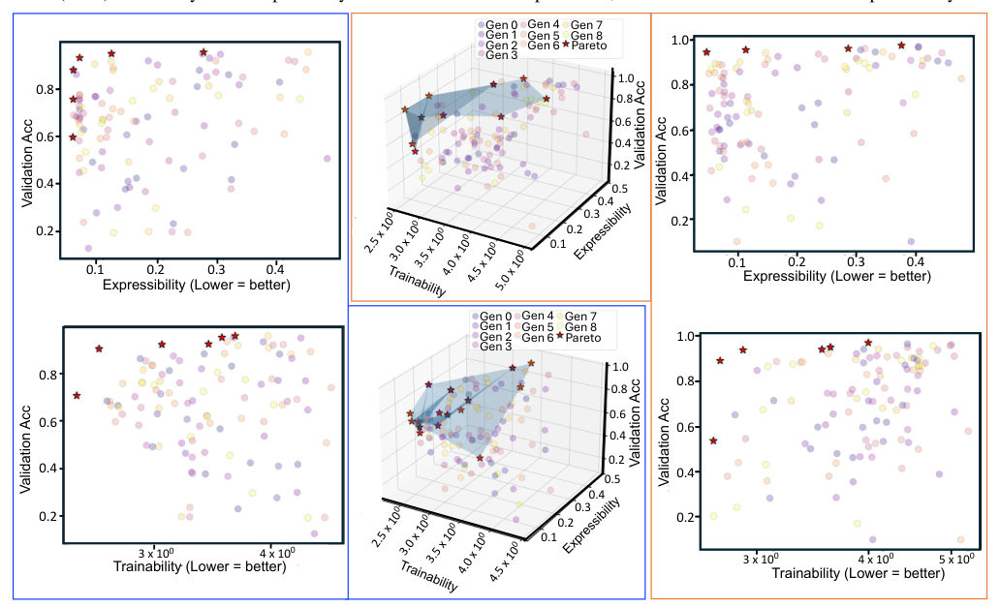
Summary. This paper demonstrates that the integration of classical layers in hybrid quantum neural networks fundamentally changes the optimization landscape, breaking the traditional trade-off between circuit expressibility and trainability. By using a multi-objective neural architecture search, the authors show that classical components can mitigate barren plateaus, suggesting that hybrid design principles differ significantly from standalone quantum circuit design.
Why it may be interesting. not directly relevant
Main problem. Investigating whether the well-known expressibility-trainability trade-off in standalone parameterized quantum circuits (PQCs) persists in hybrid quantum-classical neural networks (HQNNs).
Main result. The study finds that classical layers in hybrid architectures decouple trainability from expressibility, effectively eliminating the trade-off observed in pure PQCs under full end-to-end training.
Method. A two-stage approach involving a systematic empirical analysis of gradient variance and KL divergence across various architectures, followed by a multi-objective Neural Architecture Search (NAS) using the NSGA-II algorithm.
Model / system. Hybrid Quantum-Classical Neural Networks (HQNNs) consisting of classical convolutional/fully connected layers integrated with Parameterized Quantum Circuits (PQCs) using various entanglement topologies and rotation gates.
Key observables. Expressibility (via KL divergence), Trainability (via gradient variance), and Task Performance (via MNIST validation accuracy).
Important parameters / regimes. Circuit depth (L), qubit count (n), entanglement topologies (linear, star, all-to-all, etc.), and training configurations (pure PQC, quantum-only, and full end-to-end).
Assumptions / limitations. Assumes that the properties of standalone PQCs might be used as design heuristics for hybrid models, a premise the paper seeks to challenge.
Figures summary. Figure 1 outlines the methodology and NAS framework; Figure 4 shows the weakening/elimination of the expressibility-trainability trade-off across different architectural settings; Figure 5 displays the Pareto-optimal fronts for the NAS results.
Paper structure. The paper introduces the problem of the expressibility-trainability trade-off, presents a two-stage methodology (empirical analysis and NAS), details the experimental setup across different training regimes, reports findings on the decoupling of trade-offs, and concludes with the results of the automated architecture search.
Hybrid quantum neural networks (HQNNs) integrate parameterized quantum circuits (PQCs) within classical networks, where the behavior of the underlying PQCs is often the primary focus of analysis. In this context, expressibility and trainability are widely used to characterize PQC's performance and are commonly assumed to exhibit a trade-off, where highly expressive circuits are more susceptible to barren plateaus. However, the validity of this relationship in HQNNs remains unclear. In this paper, we systematically analyze the expressibility--trainability relationship in HQNNs across varying circuit depths, qubit counts, entanglement topologies. We consider different training configurations, including pure PQCs, quantum-only training in hybrid setting, and full end-to-end training of hybrid models. Our results show that pure PQCs exhibit only a weak and regime-dependent trade-off, while hybrid architectures increasingly disrupt and can eliminate this relationship under full hybrid training. This indicates that classical components reshape the optimization landscape, decoupling trainability from PQC expressibility. We further propose a multi-objective neural architecture search (NAS) framework that jointly optimizes expressibility, trainability, and task performance over a combined classical--quantum design space, revealing different Pareto-optimal solutions under full end-to-end and quantum only training in hybrid setting. different trainability definitions. Our results suggest that hybridization is not just an implementation detail, but a defining factor in the performance of quantum machine learning models.
Authors: Takahiro Misawa, Ryo Tamura, Kazuyoshi Yoshimi, Youhei Yamaji
Type: both · Category: strongly correlated electrons · PDF: https://arxiv.org/pdf/2605.24857v1
Analysis basis: full PDF text, analyzed in chunks




Summary. This paper presents a systematic, data-driven method to determine spin Hamiltonian parameters in quantum magnets using Bayesian optimization of experimental magnetization data. It successfully constrains the exchange interactions in alpha-RuCl3 but highlights that magnetization alone cannot resolve the absolute energy scale of the Kitaev interaction.
Why it may be interesting. not directly relevant
Main problem. Determining the precise spin Hamiltonian parameters for the Kitaev material alpha-RuCl3 is challenging due to the high sensitivity of ab initio calculations to methodological details.
Main result. The authors identified an optimized parameter set (K=-6.0, Gamma=7.5, Gamma'=-0.3, J=-1.75, gc=2.3 meV) and demonstrated that while magnetization constrains parameter ratios, it cannot determine the absolute energy scale of the Kitaev coupling K.
Method. A data-driven approach using Bayesian optimization (PHYSBO) of experimental magnetization curves combined with exact diagonalization (ED) and the H-Phi method.
Model / system. The physical system is the candidate Kitaev material alpha-RuCl3, modeled by a spin-1/2 Hamiltonian on a honeycomb lattice including Kitaev (K), Heisenberg (J), and off-diagonal (Gamma, Gamma') interactions.
Key observables. Ground-state magnetization curves (along b and c axes), static spin structure factor, magnetic susceptibility, and specific heat.
Important parameters / regimes. Exchange couplings K, J, Gamma, Gamma', and the c-axis g-factor gc.
Assumptions / limitations. Assumes R-bar-3 trigonal symmetry instead of monoclinic C2/m and assumes fixed values for the a and b-axis g-factors.
Figures summary. Figure 1 shows the honeycomb structure of Ru atoms; Figure 2 depicts the Bayesian optimization workflow and cluster geometry; Figure 3 shows magnetization curves; Figure 4 shows the cost function landscape; Figure 5 shows the ground-state spin structure factor.
Paper structure. The paper introduces the problem of parameter ambiguity, describes the Bayesian optimization framework and numerical solvers, presents the optimized parameter results, performs a sensitivity analysis of the cost function, and validates the results using secondary observables like spin structure factor and susceptibility.
Determining the spin Hamiltonian of a magnetic compound is crucial for understanding its magnetic properties. A standard approach is to derive model parameters from $ab$ $initio$ calculations based on the crystal structure. However, the resulting Hamiltonian can depend sensitively on methodological details of the $ab$ $initio$ procedure. This issue is particularly evident in $α$-RuCl$_3$, a candidate Kitaev material. Here, we present an alternative, data-driven approach to determine the spin Hamiltonian parameters of $α$-RuCl$_3$ by Bayesian optimization of experimental magnetization curves along the $b$- and $c$-axis directions. We optimize five parameters, namely the Kitaev interaction $K$, off-diagonal interactions $Γ$ and $Γ'$, the Heisenberg interaction $J$, and the $c$-axis $g$-factor $g_c$. The parameter set that minimizes the cost function is $(K,Γ,Γ',J,g_c)=(-6.0,\,7.5,\,-0.3,\,-1.75,\,2.3)$, where the exchange couplings are in meV. We find that the cost function is insensitive to the absolute value of the Kitaev coupling $K$. Thus, the magnetization data alone do not determine its energy scale. The cost function also depends only weakly on $Γ'$ and $J$, while the optimization favors a large positive $Γ$. By computing the static spin structure factor, magnetic susceptibility, and specific heat, we show that these quantities favor the large-$Γ$ scenario over the small-$g_c$ scenario and that the parameter set that minimizes the cost function yields good agreement with experiment. The combination of Bayesian optimization and accurate low-energy solvers provides an effective approach for determining parameters of spin Hamiltonians. This methodology opens a systematic route to determining spin Hamiltonians in quantum magnets from experimental data.
Authors: Jan Kessler, Thomas Spura, Kristof Karhan, Thomas D. Kühne
Type: theory · Category: numerical methods · PDF: https://arxiv.org/pdf/2605.25081v1
Analysis basis: full PDF text, analyzed in chunks

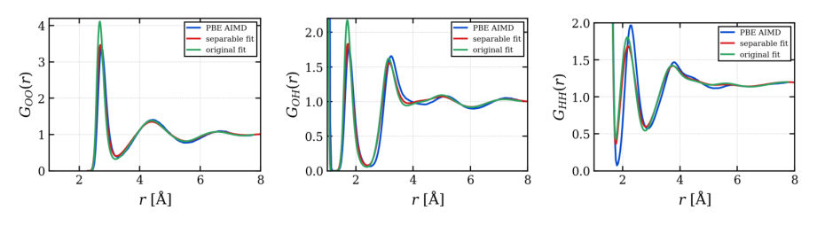
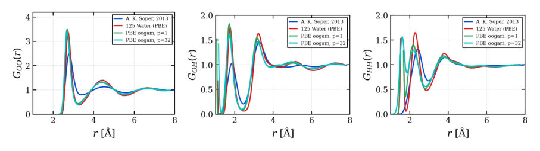
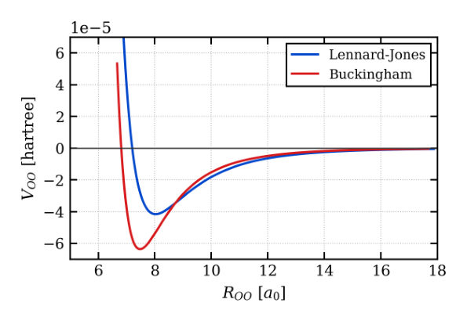
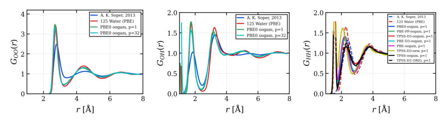
Summary. The authors present a refined force-matching workflow that uses a separable nonlinear least-squares method to derive efficient water potentials from expensive hybrid-functional DFT data. This approach avoids numerical instabilities and allows for a more accurate description of liquid water, including nuclear quantum effects, by effectively decoupling potential parameters.
Why it may be interesting. not directly relevant
Main problem. The difficulty of accurately and efficiently parameterizing flexible water models from high-level hybrid-functional DFT forces without encountering numerical instability or parameter compensation.
Main result. A new 'separable' force-matching protocol reduces the nonlinear optimization dimensionality and enables a more accurate, stable, and reproducible water potential that captures PBE0-level structural features.
Method. A variable projection (separable nonlinear least-squares) approach that analytically solves for linear force-field amplitudes, combined with PBE0 hybrid-functional reference data from CP2K.
Model / system. A flexible, four-site (q-TIP4P/F-like) analytic potential for liquid water, including intramolecular anharmonicity and intermolecular Buckingham or Lennard-Jones interactions.
Key observables. Radial distribution functions (RDFs) for O-O, O-H, and H-H; force distributions; structural and thermodynamic properties.
Important parameters / regimes. Nonlinear shape parameters (e.g., charge-site displacement, decay lengths, Buckingham steepness) and linear amplitudes (e.g., electrostatic magnitudes, force constants).
Assumptions / limitations. The water molecule is represented by a four-site rigid-charge distribution with flexible intramolecular geometry; the efficiency of PIMD relies on the separation of intramolecular and intermolecular force frequencies.
Figures summary. Figure 4 shows site-site RDFs for the final force-matched potential; Figure 5 illustrates the stability and structural broadening of the model during path-integral simulations.
Paper structure. The paper introduces the scientific challenge of water modeling, describes the new separable optimization protocol, details the PBE0 reference generation, compares Lennard-Jones vs. Buckingham forms, and validates the resulting model via classical and path-integral MD.
Force-matched water models provide a practical route from first-principles reference data to long classical and path-integral molecular simulations. Previous flexible four-site potentials in the spirit of q-TIP4P/F showed that fitting analytic models to density-functional-theory forces can reproduce key structural features of liquid water while retaining the efficiency required for quantum-nuclear sampling. Here we introduce two refinements aimed at making this strategy more accurate and more reproducible for molecular simulation. First, the production fit is based on PBE0 hybrid-functional reference forces and therefore includes the Hartree--Fock exact-exchange contribution in the electronic-structure target. Second, the parametrization is formulated as a separable nonlinear least-squares problem in which all linear force-field amplitudes are eliminated analytically for every trial set of nonlinear shape parameters. The resulting force-matching protocol lowers the dimension of the nonlinear search, reduces compensation between heterogeneous parameters, and enables a controlled comparison of Lennard-Jones and Buckingham oxygen--oxygen repulsion terms. Applied to CP2K reference forces for liquid water, the projected optimization reproduces target force distributions and yields radial distribution functions close to first-principles and neutron-scattering benchmarks. The Buckingham representation gives a more flexible short-range repulsive wall than a purely Lennard-Jones form, and the final flexible model remains stable in path-integral simulations. The method provides a transparent workflow for deriving simulation-ready water potentials from accurate hybrid density-functional reference forces.
Authors: Satish Kumar, U. Jena, A. Bandhopadhay, G. B. G. Stenning, D. T. Adroja, S. Petit, P. Khuntia
Type: experiment · Category: strongly correlated electrons · PDF: https://arxiv.org/pdf/2605.24119v1
Analysis basis: full PDF text, analyzed in chunks
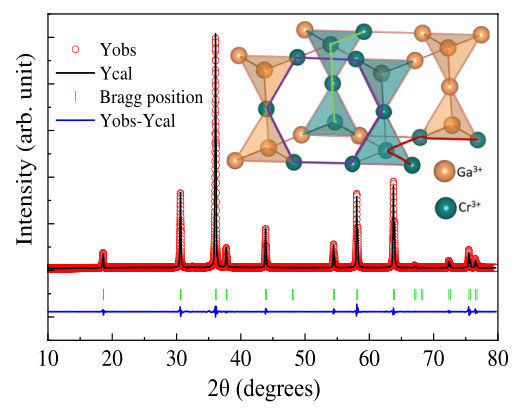
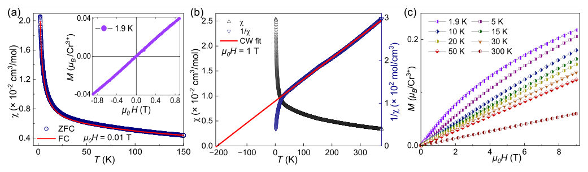
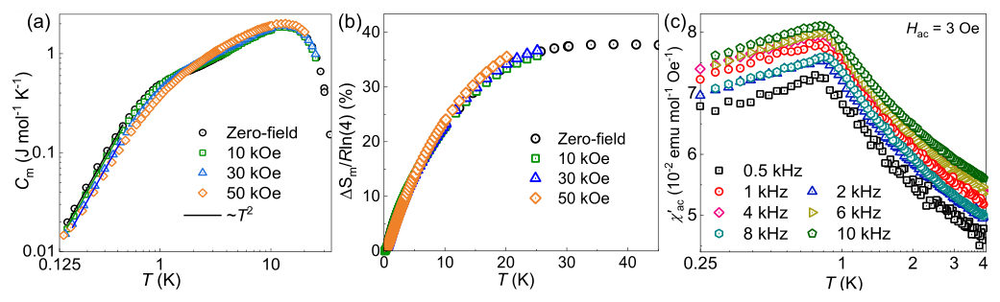
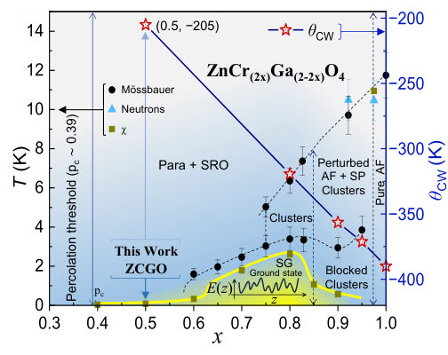
Summary. This paper reports the discovery of a dynamic, correlated magnetic state in the highly frustrated 3D magnet ZnCrGaO4. By utilizing intrinsic disorder to suppress long-range ordering, the material exhibits signatures of a quantum spin liquid, including power-law specific heat. This makes it a significant platform for studying 3D quantum magnetism and disorder-driven criticality.
Why it may be interesting. not directly relevant
Main problem. The study aims to determine the magnetic ground state of the highly frustrated 3D antiferromagnet ZnCrGaO4 and investigate whether intrinsic cation disorder can stabilize a quantum spin liquid state.
Main result. The researchers found no evidence of long-range magnetic ordering or spin freezing down to 125 mK, instead observing signatures of a dynamic, correlated ground state with power-law specific heat.
Method. The study uses a combination of solid-state synthesis, powder X-ray diffraction, and low-temperature thermodynamic measurements including AC/DC magnetic susceptibility and specific heat.
Model / system. The system is ZnCrGaO4 (ZCGO), a 3D pyrochlore-like magnet with a cubic spinel structure where Cr3+ (S=3/2) ions form a frustrated network of corner-sharing tetrahedra subject to intrinsic site disorder from Ga3+ substitution.
Key observables. Curie-Weiss temperature, magnetic susceptibility (ZFC/FC and AC), magnetic specific heat, magnetization, and magnetic entropy.
Important parameters / regimes. Curie-Weiss temperature (theta_CW approx -205 K), frustration parameter (f approx 1640), exchange interaction (J/kB approx 55 K), and temperature scales down to 125 mK.
Assumptions / limitations. The analysis assumes the validity of the Curie-Weiss law at high temperatures and uses a mean-field approximation to estimate exchange strength.
Figures summary. Figure 1 shows Rietveld refinement and the tetrahedral network with disorder; Figure 2 shows ZFC/FC magnetic susceptibility; Figure 4 shows a phase diagram of the ZnCr(2-x)Ga(x)O4 compositional range.
Paper structure. The paper begins with structural characterization, moves to high-temperature magnetic properties, investigates low-temperature susceptibility to rule out spin freezing, analyzes specific heat for evidence of excitations, and concludes with a discussion on the stabilized spin-liquid state.
Frustrated pyrochlore lattices in transition-metal oxides provide an ideal platform for realizing exotic quantum states, including spin liquids with unconventional low-energy excitations arising from the macroscopic ground-state degeneracy of corner-sharing tetrahedral networks. Here, we report the synthesis and comprehensive characterization of ZnCrGaO$4$, a frustrated three-dimensional pyrochlore-like magnet in which intrinsic cation ordering gives rise to unavoidable atomic-site disorder. A Curie--Weiss analysis of the high-temperature magnetic susceptibility yields a large negative Curie--Weiss temperature, $θ{\mathrm{CW}} \approx -205$ K, indicating dominant antiferromagnetic exchange interactions ($J/k_{\mathrm{B}} \sim 55$ K) between Cr$^{3+}$ ($S = 3/2$) moments. Despite the presence of strong antiferromagnetic interactions, no signature of long-range magnetic ordering is observed down to 125 mK, as evidenced by specific-heat and ac-susceptibility measurements. Furthermore, the absence of bifurcation between zero-field-cooled and field-cooled dc magnetic susceptibilities measured at 0.01 T indicates the absence of spin freezing, which is further supported by the frequency-independent ac susceptibility down to 250 mK. The presence of broad maxima in the magnetic specific heat and ac susceptibility at low temperatures suggests the development of short-range spin correlations within a dynamic magnetic state. In addition, the low-temperature specific heat follows a power-law behavior below 1 K, indicating the presence of unconventional low-energy excitations and algebraic spin correlations. These results provide compelling evidence for a dynamic correlated ground state in ZnCrGaO$_4$, establishing it as a promising platform for exploring highly frustrated $S > 1/2$ three-dimensional quantum magnets and potential spin-liquid behavior.
Authors: Sviatoslav V. Dzhenzher
Type: theory · Category: other · PDF: https://arxiv.org/pdf/2605.24923v1
Analysis basis: full PDF text, analyzed in chunks
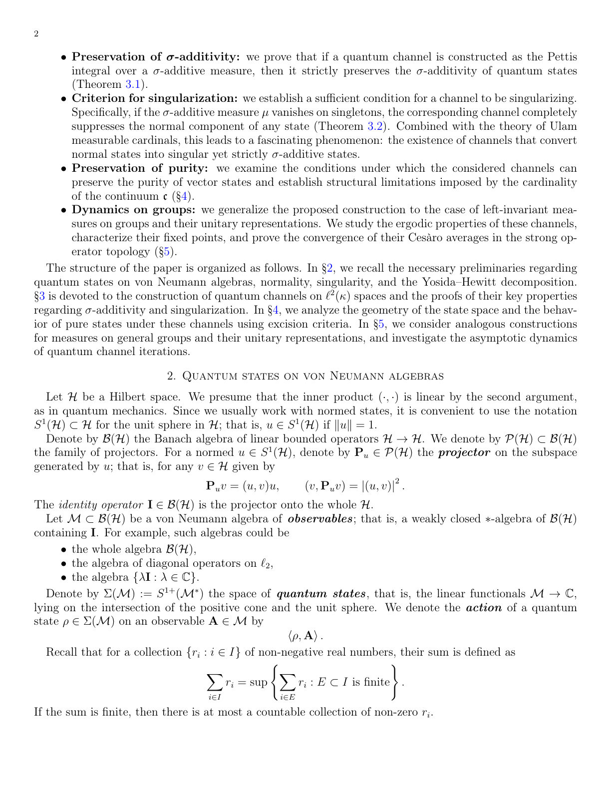
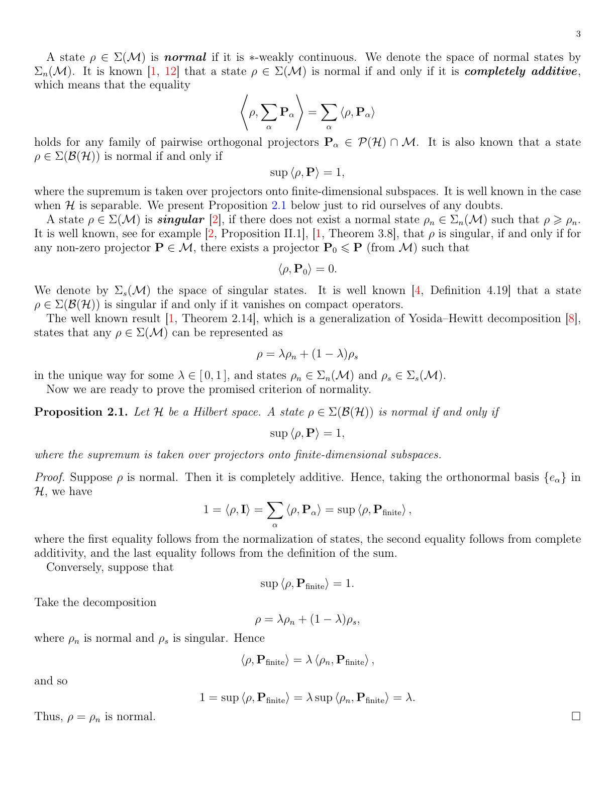
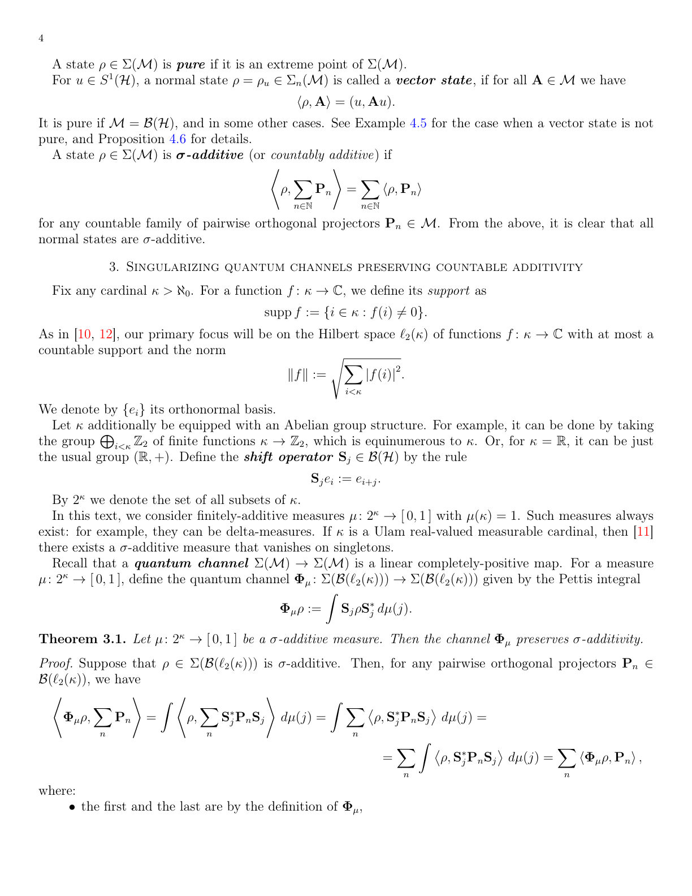
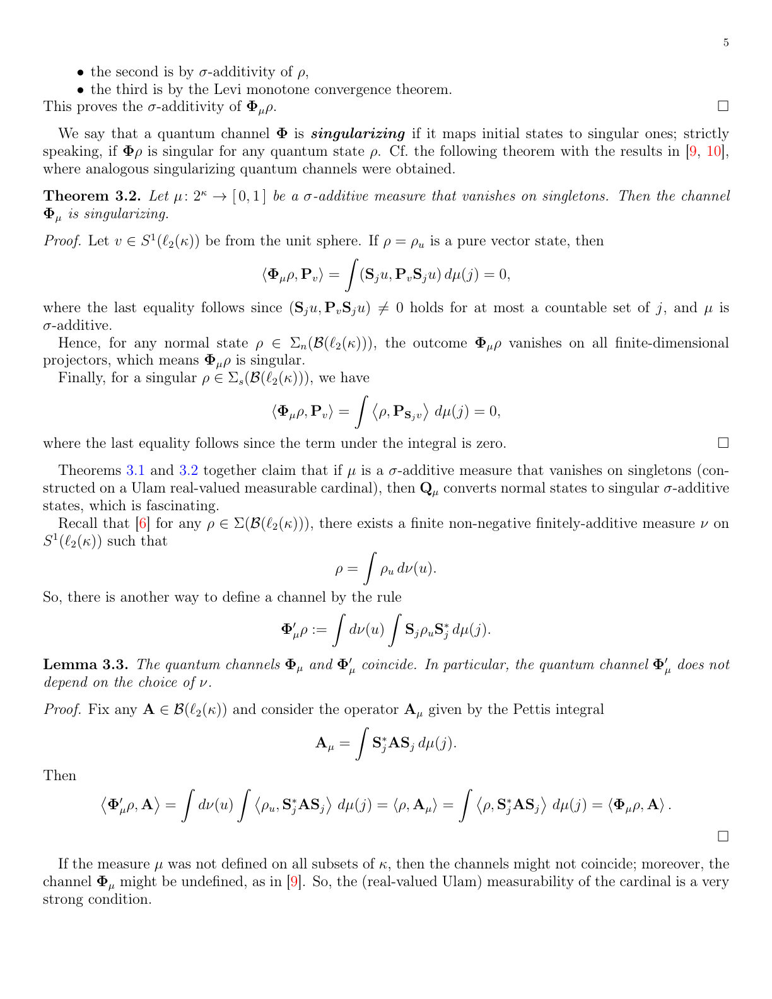
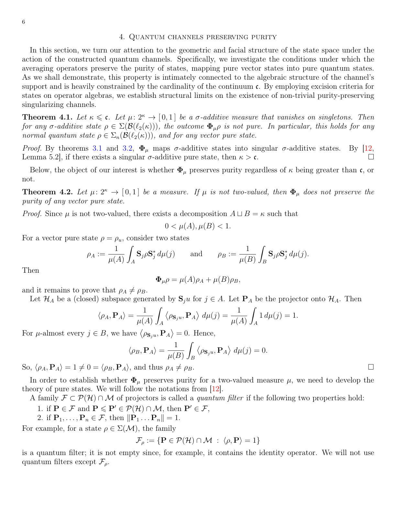
Summary. This paper explores the intersection of set theory and operator algebra to describe a class of quantum channels that can transform standard normal quantum states into singular, sigma-additive states. It provides rigorous conditions for when these channels preserve or destroy state purity based on the cardinality of the underlying space. The work demonstrates a novel phenomenon where quantum dynamics can lead to states that are mathematically singular yet still satisfy countable additivity.
Why it may be interesting. not directly relevant
Main problem. The paper investigates the structural and dynamical properties of quantum channels on von Neumann algebras, specifically focusing on how these channels transform normal states into singular states.
Main result. The author establishes that quantum channels constructed via Pettis integrals can be 'singularizing' (mapping normal states to singular states) and can preserve sigma-additivity, provided the underlying measure vanishes on singletons and is sigma-additive.
Method. The study utilizes the Yosida-Hewitt decomposition, Pettis integration over operator groups, and set-theoretic tools involving Ulam real-valued measurable cardinals.
Model / system. The mathematical framework involves von Neumann algebras, specifically B(H) and B(l^2(kappa)) for uncountable dimensions, and quantum channels defined by averaging over group representations using the Pettis integral.
Key observables. sigma-additivity, state purity, and the convergence of Cesaro averages in the strong operator topology.
Important parameters / regimes. The cardinality of the continuum (c), the dimension of the Hilbert space (kappa), and the properties of the measure (sigma-additivity and whether it vanishes on singletons).
Assumptions / limitations. The construction assumes the existence of Ulam real-valued measurable cardinals and that the dimension kappa is equipped with an Abelian group structure.
Paper structure. The paper is structured by analyzing the construction of channels via Pettis integrals, followed by establishing criteria for sigma-additivity preservation and singularization, investigating the destruction or preservation of state purity, and concluding with the ergodic properties and convergence of channel iterations.
We investigate the structural and dynamical properties of a class of quantum channels on von Neumann algebras induced by averaging over operator groups via the Pettis integral. Utilizing the classical Yosida--Hewitt decomposition, we focus on the interplay between the set-theoretic properties of the underlying space and the topological nature of the resulting quantum states. We establish a suffucient condition under which a channel preserves $σ$-additivity and exhibits a singularizing property, completely suppressing the normal component of any incoming state. In conjunction with the theory of Ulam real-valued measurable cardinals, this framework reveals a novel phenomenon: the existence of quantum channels that transform normal states into singular yet strictly $σ$-additive states. Furthermore, we analyze the structural constraints on the preservation of state purity imposed by the cardinality of the continuum, and extend our constructions to invariant measures on groups and their unitary representations, establishing the convergence of their Cesàro averages in the strong operator topology.
Authors: Amruthesh Thirumalaiswamy, Lawson J. Woods, Heekun Cho, Hugo MacDermott-Opeskin, Jennifer Clark, Irfan Alibay, Yuxuan Zhuang, Oliver Beckstein, Matthias Heyden
Type: theory · Category: statistical mechanics · PDF: https://arxiv.org/pdf/2605.24271v1
Analysis basis: full PDF text, analyzed in chunks
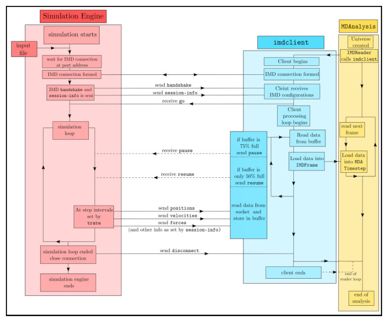
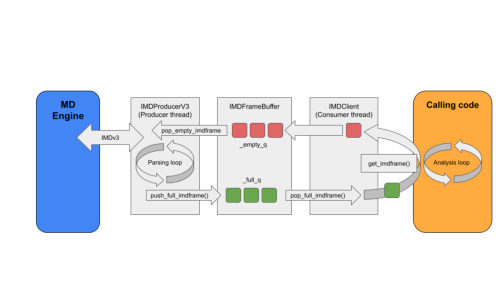
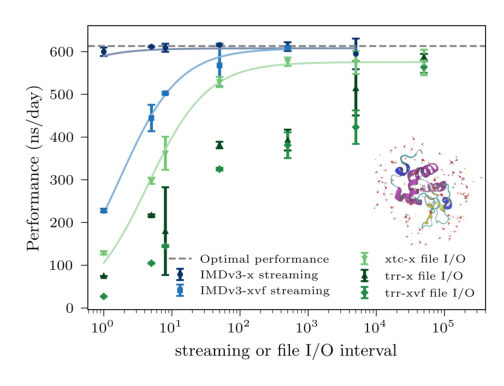
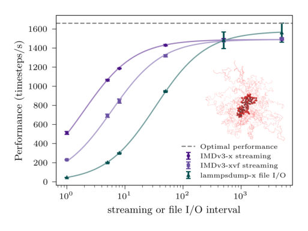
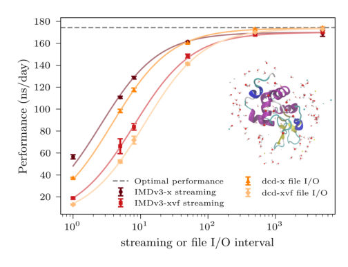
Summary. This paper presents a new streaming framework for molecular dynamics that allows simulation data to be analyzed in real-time as it is generated. By using the IMDv3 protocol, researchers can monitor fast-scale physical phenomena without the massive storage overhead or performance penalties associated with traditional high-frequency trajectory files.
Why it may be interesting. not directly relevant
Main problem. Large-scale molecular dynamics simulations generate petabytes of data, creating a bottleneck where frequent disk writes for high-resolution trajectories degrade performance and storage limits force researchers to discard high-frequency physical information.
Main result. The introduction of the IMDv3 protocol enables real-time data streaming from GROMACS, NAMD, and LAMMPS to a Python client, providing a performance advantage over high-frequency file I/O and allowing for on-the-fly analysis of fast physical processes.
Method. The authors developed the IMDv3 protocol for TCP/IP data streaming, implemented it in major MD engines, and created the 'imdclient' Python package with an integrated MDAnalysis reader for real-time processing.
Model / system. The framework is applied to all-atom molecular dynamics simulations of complex systems, including proteins (Lysozyme), solvent dynamics, and bead-spring polymers.
Key observables. Atomic positions, velocities, forces, energies, simulation time, and box dimensions.
Important parameters / regimes. Transmission rate (trate), buffer size, and data transfer intervals.
Assumptions / limitations. The current implementation does not support random access or rewinding of streamed data, and force feedback is not yet supported in all engines.
Figures summary. Figure 1 shows the IMDv3 data flow from engine to client; Figure 2 illustrates the FIFO buffer mechanism; Figure 3 compares simulation performance across various streaming and file I/O scenarios.
Paper structure. The paper identifies the data bottleneck problem, introduces the IMDv3 protocol and software architecture, details the implementation in major MD packages, presents benchmarking results comparing streaming to file I/O, and demonstrates real-time analysis applications.
Only a small fraction of the data generated in state-of-the-art all-atom multi-microsecond molecular dynamics (MD) simulations is typically analyzed. With femtosecond integration steps, microsecond simulations generate billions of time steps containing atomic positions, velocities, and forces, often corresponding to petabytes of data. Since this exceeds practical storage capacities, only a subset of frames is usually written to trajectory files at intervals of 10-100 ps. While sufficient for ensemble averages and slow dynamics, this approach discards information on fast processes such as molecular vibrations, solvent dynamics, short-lived transition states, and transport phenomena that are directly related to macroscopic properties and experimental observables. Here, we introduce a streaming framework for MD simulations that provides direct access to all data generated during a running simulation. Instead of writing high-frequency output to disk, the framework enables user-defined analysis and processing routines to access simulation data in real time. To achieve this, we extend the Interactive Molecular Dynamics (IMD) protocol and implement an enhanced version, termed IMDv3, in the MD packages GROMACS, NAMD, and LAMMPS. We further introduce the Python package imdclient, which receives IMDv3 data streams and exposes them to external applications. To maximize usability, we add an imdclient-based reader to the MDAnalysis package, enabling streamed simulation data to be analyzed alongside conventional trajectory files. Benchmark results show that streaming can improve performance compared to simulations with high-frequency trajectory output. Example applications include live monitoring of custom variables, evaluation of velocity time-correlation functions with fast fluctuations, and real-time analysis of membrane pore currents.
Authors: Masashi Akiyama, Yusuke Inokuma, Yoshiaki Ono
Type: theory · Category: strongly correlated electrons · PDF: https://arxiv.org/pdf/2605.24927v1
Analysis basis: full PDF text, analyzed in chunks
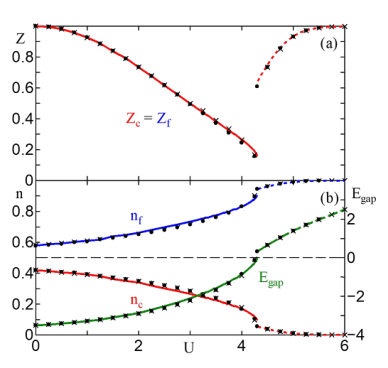
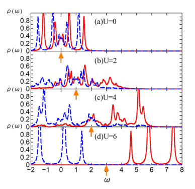
Summary. This paper uses DMFT to show that doping a band insulator in a two-band Hubbard model creates a highly correlated semimetal with in-gap states. These findings provide a theoretical framework for understanding mass enhancement and spectral weight transfer in materials like Ta2NiSe5.
Why it may be interesting. not directly relevant
Main problem. The study investigates strong correlation effects in a doped electron-hole two-band Hubbard model, specifically focusing on the emergence of in-gap states and mass enhancement.
Main result. A first-order Lifshitz transition occurs at a critical interaction strength, and hole doping the resulting band insulator leads to a correlated semimetal with significant in-gap states and mass enhancement.
Method. The authors use Dynamical Mean-Field Theory (DMFT) combined with Exact Diagonalization (ED) on a Bethe lattice.
Model / system. A spinless electron-hole two-band Hubbard model (extended Falicov-Kimball model) featuring conduction and valence electrons with interband Coulomb interaction U and level splitting delta.
Key observables. Renormalization factor Z (effective mass), occupation numbers nc and nf, band gap Egap, and spectral functions rho(omega).
Important parameters / regimes. Interband Coulomb interaction U, hole doping concentration x, level splitting delta, and bandwidth W.
Assumptions / limitations. The calculation is performed in the infinite-dimensional limit using a Bethe lattice; numerical convergence is checked using small cluster sizes (Ns = 4, 6, 8).
Figures summary. Fig 1 shows the jump in Z, nc, and Egap at the transition; Fig 2 displays the evolution of spectral functions at half-filling; Fig 3 shows the dependence of Z and occupation numbers on U and doping.
Paper structure. The paper introduces the model, describes the DMFT/ED methodology, presents results for the half-filled case (Lifshitz transition), analyzes the effects of hole doping (in-gap states), and discusses experimental connections.
We investigate the strong correlation effect in the spinless electron-hole two-band Hubbard model using the dynamical mean-field theory. At half filling, both the renormalization factor $Z$ and the number of conduction electrons (valence holes) $n_c$ decrease with increasing the interband Coulomb interaction $U$ down to $Z\sim 0.15$ and $n_c\sim 0.1$ for $U_c \sim \mbox{bandwidth}$ at which the first-order Lifshitz transition occurs from a correlated semimetal with a large effective mass $m^*/m=Z^{-1}$ to a band insulator with a finite gap due to the Hartree shift. A slight hole doping $x$ in the band insulator with a large $U>U_c$ yields a remarkable correlated semimetal with $Z\sim 0.1$ at $x\sim 0.01$, where in-gap states emerge above the valence band top and those weights increase with increasing $x$ together with the increase in $Z$ similar to the in-gap states observed in doped Mott insulators.
Authors: Takashi Inoue, Shoji Yamamoto
Type: theory · Category: strongly correlated electrons · PDF: https://arxiv.org/pdf/2605.24430v1
Analysis basis: full PDF text, analyzed in chunks

Summary. This paper identifies a phenomenon called 'superconfinement' in a quasiperiodic Penrose lattice, where antiferromagnetic excitations are more strictly localized than electrons. It demonstrates how quantum interactions between magnons lift the macroscopic degeneracy of these confined states. The findings highlight how aperiodic geometry and site potentials uniquely govern collective excitations.
Why it may be interesting. not directly relevant
Main problem. The study investigates the nature of novel confined states (antiferromagnons) in a two-dimensional Penrose lattice and compares their spatial confinement to electrons in a tight-binding model.
Main result. The authors discover 'superconfinement,' where spin-wave excitations are restricted strictly to tricoordinated sites, and show that quantum corrections (magnon-magnon interactions) lift the massive degeneracy of these states into two separate groups.
Method. The study employs Linear Spin-Wave (LSW) theory and an Interacting Spin-Wave (ISW) formalism using the Holstein-Primakoff transformation, combined with perpendicular-space analysis and numerical diagonalization of periodic approximants.
Model / system. A spin-S nearest-neighbor antiferromagnetic Heisenberg model on a two-dimensional bipartite Penrose lattice, analyzed using both LSW and ISW Hamiltonians.
Key observables. Site-resolved density of states (DOS), wavefunction amplitudes, spectral weight distribution, and coordination-number-resolved DOS.
Important parameters / regimes. Spin magnitude (S), exchange interaction (J), coordination number (z), and the golden ratio (tau).
Assumptions / limitations. The analysis is primarily based on the Holstein-Primakoff boson expansion truncated at the O(S^0) level.
Figures summary. Figure 1 shows the Penrose lattice structure; Figure 2 and 3 display coordination-resolved DOS and site-resolved amplitudes; Figure 4 illustrates building blocks; Figure 7 compares LSW and ISW spectra; Figure 9-11 detail the lattice projection and vertex types.
Paper structure. The paper introduces the Penrose lattice and the Heisenberg model, compares LSW and tight-binding confinement, analyzes the construction of confined states via building blocks, investigates the impact of quantum corrections (ISW), and concludes with the effects of boundary conditions and local environments.
We find novel confined states in the spin-$S$ nearest-neighbor antiferromagnetic Heisenberg model on the two-dimensional Penrose lattice. Linear spin waves have massively degenerate eigenstates strictly confined to tricoordinated sites. They contrast with the well-known itinerant analogs in the tight-binding model, where electrons are confined but extended to both tricoordinated and pentacoordinated sites. It is the site potentials in the spin-wave Hamiltonian, originating from Coulomb interactions between electrons, that confine spin waves to minimally coordinated sites only. Confined states in the tight-binding Hamiltonian consist of six types of building blocks, whereas those in the spin-wave Hamiltonian consist of only four of them. Confined spin waves are robust against $1/S$ corrections. Emergent $O(S^{0})$ interactions further confine -- superconfine -- spin waves into two separate groups within tricoordinated sites.
Authors: Y. F. Chen, Y. Shen, X. J. Qian, G. M. Zhang, M. P. Qin
Type: theory · Category: strongly correlated electrons · PDF: https://arxiv.org/pdf/2605.25654v1
Analysis basis: full PDF text, analyzed in chunks
Summary. This paper investigates the mechanism of superconductivity in the bilayer nickelate La3Ni2O7 using DMRG simulations. It demonstrates that the itinerancy of the 3d_z2 orbital promotes pairing and that superconductivity is suppressed as this orbital approaches half-filling. The study also highlights a competition between charge density waves and superconductivity, with pairing enhanced near charge-fluctuation-rich singularity points.
Why it may be interesting. not directly relevant
Main problem. The study aims to resolve the role of the Ni 3d_z2 orbital in the high-Tc superconductivity of La3Ni2O7, specifically whether its itinerancy and the presence of its Fermi pocket are essential for pairing.
Main result. The researchers find that the itinerancy of the 3d_z2 orbital is favorable for pairing and that superconducting correlations are significantly suppressed as the 3d_z2 orbital approaches half-filling. They also identify that pairing is enhanced near specific singularity points characterized by large charge fluctuations.
Method. Large-scale Density-Matrix Renormalization Group (DMRG) calculations on a one-dimensional cylindrical geometry with bond dimensions up to 18,000 and finite truncation error extrapolation.
Model / system. An effective bilayer two-orbital model for the pressurized nickelate La3Ni2O7, incorporating Ni e_g orbitals (d_x2-y2 and d_z2) with inter-orbital hybridization, interlayer super-exchange coupling (J), and interlayer d_z2 hopping.
Key observables. Orbital-resolved charge and spin density distributions, pair-pair correlation functions for both orbitals, and the superconducting pairing exponent (K_SC) extracted from power-law decay.
Important parameters / regimes. Chemical potential difference (mu) used to tune 3d_z2 filling, interlayer super-exchange coupling (J = 0.5), and 3d_z2 orbital occupancy ranging from 1/12 doping to half-filling.
Assumptions / limitations. The model uses a minimal one-dimensional geometry (chain/ladder) and treats the 3d_z2 orbital using a t-J-like approach where double occupancy is forbidden.
Figures summary. Figures 6 and 8 show charge density patterns and CDW wavelength changes at specific chemical potentials; Figures 7 and 9 display pairing correlation functions and their enhancement at singularities; Figures 10 and 11 illustrate the DMRG extrapolation and power-law fitting procedures.
Paper structure. The paper introduces the problem of Ni 3d_z2 orbital role, describes the bilayer two-orbital model and DMRG methodology, presents results on charge density waves and orbital-specific pairing, analyzes the evolution of correlations with filling, and concludes with the competition between charge order and superconductivity.
The discovery of high-${T_c}$ superconductivity in pressurized bilayer nickelate La$_3$Ni$_2$O$_7$ presents a new arena for exploring unconventional pairing mechanisms. A pivotal yet unresolved issue is the specific role of the $3d_{z^{2}}$ orbital of Ni. While its inter-layer super-exchange antiferromagnetic coupling is widely considered crucial for superconductivity, the role of its itinerancy remains undetermined. Early studies showed that the superconductivity is accompanied by the emergence of a small Fermi pocket of the $3d_{z^{2}}$ orbitals. However, recent experiments show controversial results on the role of the $3d_{z^{2}}$ Fermi pocket on superconductivity. Motivated by these experimental results, we investigate an effective bilayer two-orbital model for La$_3$Ni$_2$O$_7$ using density-matrix renormalization group (DMRG) on a minimal one-dimensional geometry. By systematically varying the $3d_{z^{2}}$ orbital filling from $1/12$ doping to half-filling, we observe a pronounced suppression of superconducting correlations near half-filling. Our results demonstrate the itinerancy of $3d_{z^{2}}$ orbital is favorable for the pairing in the bilayer two-orbital model for La$_3$Ni$_2$O$_7$. Moreover, we observe that the pairing correlation is enhanced in regions where charge fluctuations are large, suggesting a competition between charge order and superconductivity in the model.
Authors: Mahiru Seki, Reo Kono, Naotaka Tanaka, Kensei Ushio, Daiki Nakaoka, Masayuki Ochi, Kazuhiko Kuroki, Hirofumi Sakakibara
Type: theory · Category: strongly correlated electrons · PDF: https://arxiv.org/pdf/2605.24565v1
Analysis basis: full PDF text, analyzed in chunks
Summary. This study theoretically demonstrates that applying pressure to infinite-layer nickelate membranes increases superconductivity by reducing the extreme electron correlations present at low Ni valence. By using a seven-orbital model, the authors show that the reduction in Ni-O bond distance enhances the bandwidth and mitigates the strength of the Coulomb interaction.
Why it may be interesting. not directly relevant
Main problem. Understanding the mechanism behind the enhancement of the superconducting transition temperature (Tc) in infinite-layer nickelate membranes under high pressure.
Main result. The increase in Tc is driven by the mitigation of excessively strong electron correlations (reduced U/t ratio) caused by the reduction of Ni-O bond distances under pressure.
Method. First-principles calculations (Quantum ESPRESSO) combined with the fluctuation exchange (FLEX) approximation and the linearized Eliashberg equation.
Model / system. A freestanding infinite-layer nickelate membrane of Nd0.85Sr0.15NiO2 under external pressure (up to 90 GPa), modeled using a seven-orbital effective Hamiltonian including Ni-3d and Nd-5d orbitals.
Key observables. Superconducting transition temperature (Tc), eigenvalue of the Eliashberg equation (lambda), lattice constants (a and c), and phonon dispersion.
Important parameters / regimes. Onsite Coulomb (U, U') and exchange (J, J') parameters, hopping integrals (t1, t2, t3), and the ratio of interaction to hopping (U/t).
Assumptions / limitations. Use of the virtual crystal approximation (VCA) for Sr doping and the construction of a seven-orbital model via Wannierization.
Figures summary. Figure 1 shows a schematic of the study's gist, lattice constants as a function of pressure, and phonon dispersion; Figure 2 shows the electronic band structure.
Paper structure. The paper introduces the problem of Tc enhancement, describes the structural optimization and stability analysis, details the construction of the seven-orbital model and interaction parameters, presents the results of the FLEX calculation regarding superconductivity, and concludes with the physical mechanism.
We theoretically investigate a freestanding membrane of infinite-layer nickelate Nd$_{0.85}$Sr$_{0.15}$NiO$_2$ under pressure by constructing a seven-orbital effective model based on first-principles calculations. By performing the fluctuation exchange (FLEX) approximation, we demonstrate that the seven-orbital model explains a monotonic increase in $T_c$ reported in a recent experiment. This enhancement of superconductivity is attributed to the mitigation of excessively strong electron correlations caused by exceptionally low valence of Ni atom. Furthermore, we examine the dynamical stability of the crystal structure under pressure through phonon calculation.
Authors: Jacobo Troncoso, Claudio A. Cerdeiriña
Type: theory · Category: statistical mechanics · PDF: https://arxiv.org/pdf/2605.24105v1
Analysis basis: full PDF text, analyzed in chunks
Summary. This paper presents a versatile five-state Ising-like model that can theoretically account for both the stability-limit and liquid-liquid criticality theories of supercooled water. It introduces a novel connection between the thermodynamic anomalies of water and the inversion thermodynamics found in both classical gases and black hole physics.
Why it may be interesting. not directly relevant
Main problem. Resolving the debate between the stability-limit and liquid-liquid criticality scenarios in supercooled water by providing a unified theoretical framework.
Main result. The authors develop a model that can reproduce both competing scenarios and propose a new thermodynamic link between water's anomalies and the inversion thermodynamics seen in Joule-Thomson gases and black holes.
Method. A mean-field treatment of a five-state Ising-like model using a generalization of single-order-parameter theory with four order parameters.
Model / system. A five-state Ising-like model where lattice sites are 'cells' defined by occupancy, volume, free volume, and particle orientations, representing gas, liquid (HDL/LDL), and crystal (HDC/LDC) phases.
Key observables. Isothermal compressibility (kappa_T), isobaric heat capacity (cp), thermal expansivity (alpha_p), density (rho), pressure (p), and temperature (T).
Important parameters / regimes. Temperature of Maximum Density (TMD) locus, liquid-liquid critical point (LLCP), and the Joule-Thomson inversion locus.
Assumptions / limitations. The use of mean-field theory in three dimensions and the treatment of the crystal phase as a spectator phase rather than modeling specific ice lattice structures.
Figures summary. Figure 1 shows the five cell states; Figure 2 displays the stability-limit scenario with p-rho isotherms and p-T phase diagrams; Figure 3 shows the liquid-liquid criticality scenario; Figure 4 compares water simulation results with argon experimental data and provides a table of thermodynamic analogies.
Paper structure. Introduction of the problem, description of the five-state cell model, presentation of the stability-limit scenario, presentation of the liquid-liquid criticality scenario, discussion of the thermodynamic inversion analogy with gases and black holes, and concluding remarks.
We introduce a model of water contemplating true supercooled-liquid states that, as such, are metastable with respect to the crystalline-solid ones. Its numerical solutions reproduce from Speedy-Angell's stability-limit picture to Poole et al.'s metastable liquid--liquid criticality. The real existence of a liquid--liquid critical point is found to gain significant theoretical plausibility from a hitherto unnoticed analogy with the ``inversion thermodynamics'' of Joule-Thomson gas throttling process and, by extension, with the equivalent phenomenology exhibited by black holes.
Authors: Boqing Zhang, Henry D. Pfister, Hanwen Yao, Siyuan Niu
Type: theory · Category: quantum information and computing · PDF: https://arxiv.org/pdf/2605.24177v1
Analysis basis: full PDF text, analyzed in chunks
Summary. This paper proposes a new decoding strategy called the 'dilution method' to make message-passing algorithms more effective for large-scale quantum error correction. By iteratively sparsifying the decoding graph and freezing variables, the authors demonstrate that decoders can overcome the traditional failures caused by short cycles in quantum codes, achieving high error thresholds even at large distances.
Why it may be interesting. not directly relevant
Main problem. Addressing the scalability and interpretability challenges of message-passing decoders in quantum error correction, specifically the non-convergence caused by short cycles and high degeneracy in stabilizer codes.
Main result. The introduction of a 'dilution method' enables a quaternary Min-Sum decoder to achieve an apparent depolarizing threshold of 16% and a sustainable threshold of ~9% for X-noise at large distances (d=65), outperforming MWPM and BP-OSD.
Method. A multi-stage decoding framework using a sequence of progressively sparsified (diluted) Tanner graphs combined with a global hard-decimation step to freeze qubit variables.
Model / system. Quantum error correction using CSS and surface codes, specifically focusing on the joint X-Z Tanner graph under depolarizing and biased (X-only) Pauli noise models.
Key observables. Logical error rate, decoding threshold (p_th), cavity discrepancy (delta), and decoding complexity.
Important parameters / regimes. Code distance (d), sparsification ratio (s), damping factor (epsilon), and X-Z error coupling (kappa).
Assumptions / limitations. Assumes that auxiliary non-MP steps incur near-constant overhead and utilizes a heuristic non-expansion assumption for error weight growth across dilution stages.
Figures summary. Figure 1 shows the Tanner graph decomposition; Figures 2-4 illustrate different sparsification patterns (diagonal and Cartesian); Figures 8-9 show performance/thresholds under different noise models; Figures 10-15 detail complexity, convergence, and the theoretical impact of cycles and error weight expansion.
Paper structure. The paper begins by defining the quaternary message-passing framework for CSS codes, introduces the graph-dilution/sparsification method, provides theoretical bounds on error-correcting radii and complexity, analyzes the impact of X-Z coupling on convergence via cavity discrepancy, and concludes with numerical evidence of scalable thresholds.
The scalability and interpretability of message-passing (MP) decoding, such as (quaternary) Belief Propagation, remain open challenges in quantum error correction. Even for surface codes, arguably the first testbed for decoding methods, studies of improved MP decoders have mostly been restricted to small distances ($d \lesssim 19$). Moreover, the mismatch with established message-passing theory limits the decoder's interpretability, making it unclear whether MP decoding can sustain its effectiveness at large system sizes. This work takes a step toward a more principled and interpretable MP decoding framework, with the goal of making MP-based decoding more reliable and bridging theory and practice. We introduce a dilution method, which allows a quaternary Min-Sum (MS) decoder to exhibit an apparent depolarizing threshold of $16\%$ up to distance $20$, outperforming Minimum-Weight Perfect Matching in finite-length regimes. Notably, for $X$-noise, the standard MS decoder under dilution has worst-case complexity $O(N \log^2 d)$ and outperforms BP-OSD at $d=65$. The observed $\sim 9\%$ threshold may correspond to a true asymptotic threshold. Finally, we give a graph-dilution argument that interprets the success of the dilution method and offers insight into when MP algorithms can genuinely scale. Taken together, these results provide encouraging progress toward scalable and interpretable MP decoding in quantum error correction.
Authors: Shu Tian, Jiaqi Hu, Rebing Wu, Yu Shi
Type: theory · Category: quantum information and computing · PDF: https://arxiv.org/pdf/2605.25986v1
Analysis basis: full PDF text, analyzed in chunks
Summary. This paper proposes a new way to generate data using quantum computers without the need for traditional training. By encoding patterns directly into a quantum Hamiltonian, the ground state naturally represents the target distribution, offering a potential way to leverage entanglement and superposition for generative tasks.
Why it may be interesting. not directly relevant
Main problem. The paper addresses the high computational cost, training instability, and 'black box' nature of classical generative models like Transformers and GANs by proposing a training-free quantum alternative.
Main result. The authors demonstrate a quantum generative paradigm where the ground state of a constructed local parent Hamiltonian encodes a target distribution, achieving successful image and text generation without parameter training.
Method. The method involves mapping generative constraints to a local parent Hamiltonian, using spectral decomposition or Ising-type mappings, and solving for the ground state via Adiabatic Quantum Computing or Grover's algorithm.
Model / system. The model uses a quantum n-gram framework for text and a grid-based model for images, where qubits represent pixels or tokens and the global Hamiltonian is a sum of local Hamiltonians representing observed patterns.
Key observables. Energy spectrum (ground and excited state energies), energy expectation, and perplexity for text generation.
Important parameters / regimes. The resolution constant C (defining bit-depth for weights), number of qubits, and the number of adiabatic time steps.
Assumptions / limitations. The approach assumes that the target distribution can be effectively decomposed into local patterns and is limited by the number of available qubits for encoding.
Figures summary. Fig 1 shows the model flowchart; Fig 2-3 show input images and identified patterns; Fig 4 shows generated quantum states; Fig 5 shows energy evolution during adiabatic evolution; Fig 6 compares different pruning/smoothing protocols; Fig 7 shows energy expectation across Grover iterations.
Paper structure. The paper introduces the limitations of classical generative models, proposes a quantum 'inverse' approach, details the Hamiltonian construction and encoding mechanisms for text and images, presents simulation results using adiabatic and Grover-based protocols, and discusses future directions.
We propose a training-free quantum generative paradigm, which is fundamentally different from current generative models, which demand substantial computational power, face practical scalability limits, and often function as opaque black boxes, despite their remarkable success. We enable image and text generation without parameter training, by constructing a local parent Hamiltonian whose ground state encodes the target distribution and then solving the global Hamiltonian. Rooted directly in quantum mechanical principles, this approach establishes a new pathway for generative modeling that leverages superposition and entanglement to maintain global consistency.
Authors: Snehasish Sen, Sudhansu S. Mandal
Type: theory · Category: strongly correlated electrons · PDF: https://arxiv.org/pdf/2605.25960v1
Analysis basis: full PDF text, analyzed in chunks
Summary. This paper provides a unified theoretical framework for trimerized spin-1/2 chains, bridging the gap between low-energy spinon physics and high-energy excitations. By using a self-consistent mean-field approach, the authors reproduce experimental features like the 1/3 magnetization plateau and additional excitation bands. The results are highly consistent with both exact Bethe Ansatz solutions and previous numerical simulations.
Why it may be interesting. not directly relevant
Main problem. The lack of a unified theoretical framework to describe both low-energy spinon excitations and higher-energy excitation bands in trimerized quantum spin chains.
Main result. The development of a self-consistent Jordan-Wigner mean-field theory that successfully connects low-energy spinon physics to higher-energy bands and thermodynamic responses like the 1/3 magnetization plateau.
Method. The authors use a combination of Bethe Ansatz for low-energy mapping and a self-consistent Jordan-Wigner mean-field theory in the Hartree-Fock channel for high-energy dynamics.
Model / system. A spin-1/2 antiferromagnetic chain with trimerized exchange couplings (a J1-J1-J2 model) relevant to the compound Na2Cu3Ge4O12.
Key observables. Dynamical spin structure factor, magnetization (specifically the 1/3 plateau), magnetic susceptibility, and specific heat.
Important parameters / regimes. The modulation parameter gamma (J2/J1), the exchange coupling J1, and the external magnetic field h.
Assumptions / limitations. The mean-field approximation neglects the BCS channel and non-zero momentum mean-field contributions, and intra-trimer second-nearest-neighbor interactions are neglected.
Figures summary. Fig 1a shows the chain schematic; Fig 2 displays energy dispersion of three fermion bands; Fig 3 shows the color-coded dynamical spin structure factor; Fig 4 illustrates magnetization vs. magnetic field.
Paper structure. The paper begins with the model definition, moves to a low-energy mapping via Bethe Ansatz, develops a high-energy mean-field theory using Jordan-Wigner transformation, and concludes with calculations of dynamical and thermodynamic observables.
We investigate a spin-1/2 antiferromagnetic chain with trimerized exchange couplings relevant to Na$_2$Cu$_3$Ge$_4$O$_{12}$. We show that the low-energy Hilbert space maps onto an effective Heisenberg chain of composite spin-1/2 trimer degrees of freedom with positive coupling, enabling an exact spinon excitations via the Bethe ansatz. To access higher-energy dynamics, we develop a self-consistent Jordan-Wigner mean-field theory that yields three fermionic bands reflecting the underlying trimer structure. Remarkably, this approach reproduces the exact low-energy spinon continuum while predicting two additional higher-energy excitation bands consistent with the experimental observations and previous numerical simulations. The theory further captures the 1/3 magnetization plateau under an applied magnetic field, and provides testable predictions in magnetic susceptibility and specific heat. Our results establish a unified framework connecting low- and high-energy excitations in trimerized quantum spin chains.
← Index · ← Previous · Next →